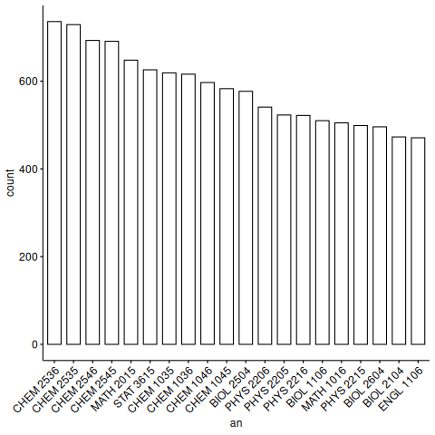
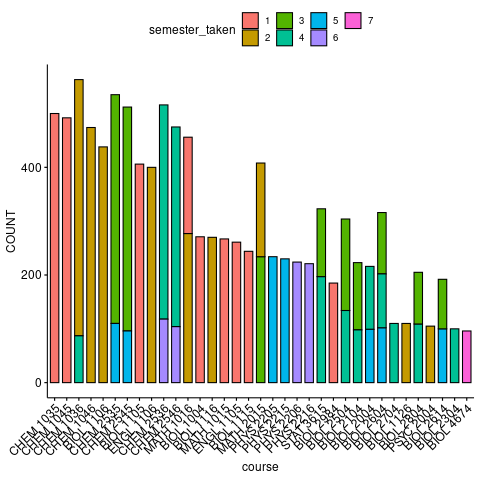

most_represented_major <- most_represented_majors %>%head(1) %>%pull(cip6)# make a list of students who obtained this degreestudents_who_graduated_major <- degree %>%filter(cip6 == most_represented_major) %>%select(mcid) %>%unique() %>%pull(mcid)# courses taken by students in most represented majorcourses_taken <- course %>%filter(mcid %in% students_who_graduated_major) %>%mutate(an =str_c(abbrev, " ", number)) %>%select(an) %>%group_by(an) %>%summarise(count =n()) %>%arrange(-count)courses_taken_plot <- courses_taken %>%head(20) %>%ggbarplot(x ="an", y ="count") +rotate_x_text(45)ggexport(courses_taken_plot, filename ="figures/courses_taken.png", verbose =FALSE)knitr::include_graphics("figures/courses_taken.png")

Make a stacked bar plot to break down which relative semester each course was taken
Code
compute_semester_indicies <-function(single_student_record) { bar <- single_student_record %>%tibble() %>%mutate(term_course =as_factor(term_course)) %>%mutate(semester_taken =as.integer(term_course)) %>%list()return(bar)}# this is the continuous interpretationwhen_courses_were_taken_discrete <- course %>%filter(mcid %in% students_who_graduated_major) %>%mutate(course =str_c(abbrev, " ", number), mcid, term_course) %>%select(mcid, course, term_course) %>%nest_by(mcid) %>%mutate(data =compute_semester_indicies(data)) %>%unnest(cols =c(data)) %>%ungroup(mcid) %>%select(course, semester_taken)# this summarize converts our interpretation to categoricalwhen_courses_were_taken <- when_courses_were_taken_discrete %>%group_by_all() %>%summarise(COUNT =n()) %>%ungroup()
`summarise()` has grouped output by 'course'. You can override using the
`.groups` argument.
# most taken courses stacked by what sequence position they were inwhen_courses_were_taken_plot <- when_courses_were_taken %>%filter(total_count >100) %>%arrange(-COUNT) %>%head(50) %>%ggbarplot(x ="course", y ="COUNT", fill ="semester_taken") +rotate_x_text(45)ggexport(when_courses_were_taken_plot,filename ="figures/when_courses_were_taken_barplot.png", verbose =FALSE)knitr::include_graphics("figures/when_courses_were_taken_barplot.png")

Code
# courses with high variation of sequence positionwhen_courses_were_taken_barplot <- when_courses_were_taken %>%select(course) %>%group_by(course) %>%summarize(n =n()) %>%ungroup() %>%arrange(-n) %>%head(20) %>%ggbarplot(y ="course", x ="n",title ="Number of different sequence positions per course") +rotate_x_text(45)
Storing counts in `nn`, as `n` already present in input
ℹ Use `name = "new_name"` to pick a new name.